INTRODUCTION
Over ten years ago, I began writing a troubleshooting article dedicated to solving a very common riddle: "Why has my .22 caliber pistol suddenly developed an urge to occasionally malfunction?" The inspiration for the piece was my own experience of developing an occasional alibi with my Model 41 after two years of literally flawless performance. Untimely perhaps, my problems first appeared during the NMC at the 1999 Illinois State Championship and just seemed to recur more and more often over the next several months.
This is undoubtedly one of the most frustrating experiences a shooter might have, especially if your pistol has run like a clock for years. In my opinion, it is imperative that you have complete confidence in your pistol to function 100% of the time during strings of sustained fire. After weeks and weeks of cleaning, measuring, testing and replacing parts, I finally solved the mystery with my pistol. Better late than never, I want to share my experiences with you, as well as other information on this subject that I have collected over the past decade.
TYPES OF MALFUNCTIONS
You can generally classify all alibis into one of three types: a misfeed, failure to eject, or a misfire.
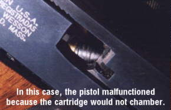
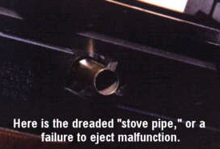
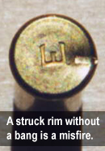
RULE OUT THE OBVIOUS
Before we go any further, if you are experiencing function issues, you must be absolutely sure that the pistol is clean. A dirty gun is the cause of possibly 90% of mechanical function problems. And just for the record, I had heard many of the bullseye old-timers claim that, "cleaning your .22 pistol does more harm than good." Most likely because they had always used improper methods in cleaning their pistols! To the contrary, a regular cleaning routine is paramount to accuracy and reliability.
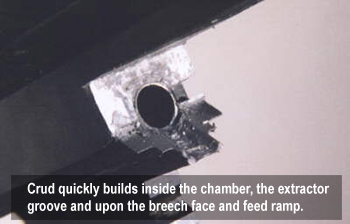
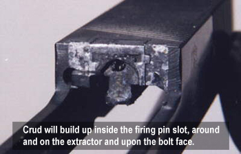
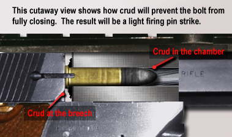
Recognize that crud (in the form of primer, powder and bullet wax residue) will naturally build up within the active parts of the pistol. After even a short time of accumulation, it will impede the ability of the pistol to function correctly and efficiently. Furthermore, low temperatures have a way of magnifying the effects of accumulated crud by making it less pliable.Crud at the breech or bolt face or in the chamber will prevent the the cartridge to load fully and will leave the its rim unsupported. This will cause a light firing pin strike and possibly a misfire.
Crud on the inside, the follower or the lips of magazines may cause a misfeed. Crud on the feed ramp or in the bolt face recess or extractor groove can also cause a misfeed.
Crud on the top of the slide or recoil rod will possibly slow down the blowback action and cause either feeding or ejection problems.
To read an excellent article by Larry Carter on proper cleaning and maintanance of a .22 caliber pistol, click HERE.
THE AMMUNITION
SAAMI (The Sporting Arms and Ammunition Manufacturers Institute) founded in 1926, provides and maintains a database of cartridge and chamber specifications for the many firearms calibers. As shown below, here are the SAAMI specifications for the .22 Long Rifle Match cartridge.
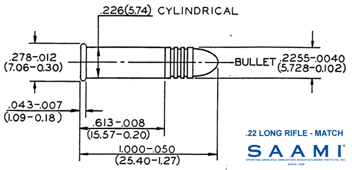
And while these dimensions are not vague, it is clear that they do allow for tolerance variations in application.
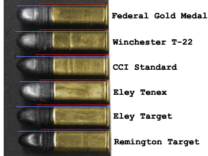
In the image on the right are six popular cartridges side-by-side. At a glance, you can easily see that each cartridge has a specific yet differing bullet profile and set of dimensions. Above each cartridge is a set of colored dimension markers: the blue line indicating overall cartridge length and red indicating shoulder to rim length. As their red lines show, CCI Standard and Eley Target have a longer shoulder length than the other cartridges.Similarly, pistol manufacturers oftentimes chamber their pistols slightly short to enhance accuracy. For example, Ruger target pistols and Clark replacement barrels have typically tight chamber dimensions.
This combination of long bullet shoulder and short chamber can prevent a cartridge from chambering completely, keeping the bolt from closing fully. In cases like this, all appears OK until the hammer falls. The inertia of the hammer closes the bolt and forces the cartridge the rest of the way into the chamber, but lacks the energy to cause the firing pin to dent the unsupported case rim. The result is a misfire.
While the cartridge dimensions will not change from day-to-day, there is an element of cartridge design that does change with the ambient temperature - the lubricant bullet wax. Each brand of cartridge is coated with a different type and quantity of lubricant wax. Some brands like Remington use a thin coat of a firm wax. Others like Eley use a heavy coat of a softer type of wax. In the accuracy department, the heavy soft wax seems to be the winner. However, be advised that cold weather will cause that soft wax to firm up and effectively increase the dimensions of the cartridge - thus, creating feeding problems. But worry not, the solution is easy. In cold shooting conditions, keep your ammunition in your pocket to allow your body heat to keep the cartridges relatively warm. Blowing once or twice on a loaded magazine before inserting it into the pistol is also a popular solution that works well.
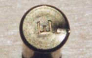
And now the last, but most notorious contribution of a particular cartridge to reliability: primer compound. If you are experiencing occasional misfires and the struck rim of these have a good firing pin dent such as that in the image on the right, they can be ruled as true misfires or "duds." It is entirely the fault of the cartridge and not the pistol.In more than 15 years of using Eley ammunition I have honestly never experienced a dud, a credit to their industry leading priming method. Other brands can boast this same reputation. However, to the contrary, some domestic brands such as Remington and Winchester are almost expected to have inconsistent priming and at least a few duds in every 100 rounds.
THE MAGAZINES
The health of your magazines has a huge impact on the pistol's functionality. The magazine can cause a variety of manfunctions including feeding problems and even failures to eject. Because of the critical nature of the magazine, I recommend that you take genuine precautions to keep them clean and healthy. For starters, I suggest using the Gun Box Magnet to keep your magazines secure instead of just tossing them into your pistol box.
A properly tuned magazine is truly important for 100% reliability in function. There really should not be much surprise in this when you consider that they are merely made of stamped and bent sheet metal. To qualify this theory, I purchased six new magazines directly from Smith and Wesson and, while all were excellent in quality, each had slightly different dimensions at the lips. And, each functioned differently in the pistol as well.
Tuning involves tweaking the top-front corner of the rear magazine lips in order that it makes contact with the brass of the top cartridge. The naked eye is the best gauge for this. Check for lip to cartridge contact and empty the magazine to make corrections if needed, pinching gently with pliars. Then repeat the process as needed. When properly tuned, the top cartridge will stay in its proper place, not too high and not too low.
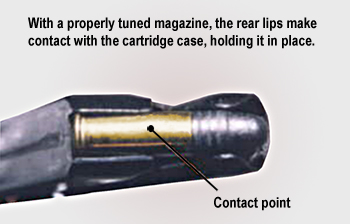
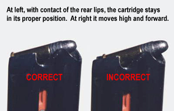
Because tolerances in the specifications allow for variations in cartridge dimensions, different brands of cartridges will fit against the same magazine lips differently. In other words, if recently changing ammunition brands has caused immediate feeding malfunctions, the solution might be a simple a tuning of the magazines - and truly no fault of the ammunition.
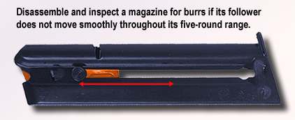
Because magazine construction is done by merely stamping them from sheet metal, tiny burrs, slight defects on the edges of stamped cutouts, sometimes form on the inside of the magazine during the manufacturing process. These burrs can make contact with the internal spring or follower and cause it to stutter. This stuttering will cause a feeding problem.Test your magazines for smooth movement throughout its five-round range. If you can feel hesitation as the follower moves up or down, you may need to disassemble the magazine and inspect the inside. A fine sandpaper of the 400-600 grit range, wrapped around a pencil, will easily clean up any burrs inside the magazine that may be catching the spring. Be sure that the magazine is completely clean of any filings before reassembling it.
EXTRACTOR AND EJECTOR
Often overlooked for importance in functionality, the extractor has a critical role in both the extraction and feeding processes. The extractor is commisioned with a very important duty: hold the blowing-back spent case in the correct horizontal position against the bolt-face until it strikes the ejector and flips to the right at the correct angle, exiting through the ejection port. Without a sharp and snug extractor on the case rim, the case will spin off-axis and have difficulty getting out of the chamber and/or hitting the ejector correctly. The spent case might also spin downward and impede the top cartridge in the magazine from entering the chamber.
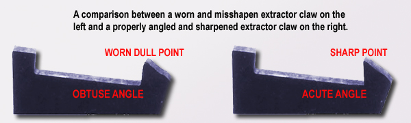
As shown above on the left, this worn and misshapen extractor will clearly not hold the newly spent case in its proper position at ignition. Replacement with a new extractor claw would be the solution - but the new extractor will need to be prepared by checking and adjusting its dimensions against the old extractor and honing the claw a sharp point with a file or other abrasive.
The ejector on most pistols is a pretty maintenance-free part. However, some pistols (especially the Ruger) are plagued with ejectors that come loose and no longer function correctly. A loose ejector may cause excessive drag on the backward and forward motion of the bolt causing either ejection or feeding problems. A damaged or bent ejector might also cause an extraction problem. A quick inspection of the ejector in the frame is well worth it.
CHAMBER PROFILE AND CONDITION
Dry firing is an undisputed essential in the training process for competitive shooting. However, in some cases, it might be detrimental to the health of your .22 caliber pistol. The travel on many firing pins is longer than necessary and when sent flying, it will actually make contact with the metal of the chamber edge if a cartridge is not present.
This condition of excess firing pin travel may also slowly develop over time. A pistol whose firing pin had never touched the breech of the barrel when new may slowly make it there as the firing pin or the firing pin stop within the bolt slowly wears.
The ding that may have formed on the edge of the chamber will force metal inwards, thus shrinking the dimensions of the chamber opening at that point. This can cause both feeding and extraction problems.
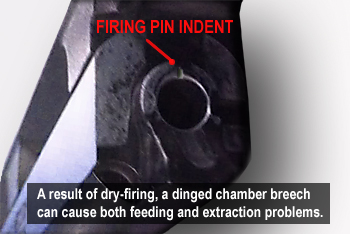
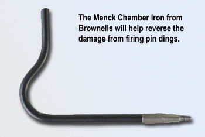
But all is not lost. Available from Brownells is the Menck Chamber Iron, a tool that allows you to swage out the ding, and restore the original round profile of the chamber. It is inexpensive and easy-to-use.
To prevent problems from ever occurring, a best practice is to use a dummy-plug in the chamber as you dry fire. They are commercially available, but you can easily make your own. I suggest collecting some spent cases that you have fired (from this pistol or they won't fit) and grinding off one side of the rim to make a superb dummy-plug at no cost. Insert the case into the chamber with the grinded-off side facing the extractor and the case will not be extracted when you rack the slide to cock the hammer. I have used the same case for as many as 50 clicks.
RECOIL GUIDE ROD AND SPRING
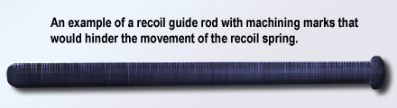
The condition of the recoil guide rod is quite important. If it is rusty, dinged up or has an otherwise rough surface, the recoil spring will drag upon it and slow the cycling slide in both its backward and forward motions. A real example is a 1971 pristine Model 41 that I had purchased from a frustrated owner for less than half its street value. In over 30 years, he just could not get it to function, so it sat mostly unfired in his gunsafe. After taking a chance and buying it, I discovered that the recoil guide rod had circular machining marks from one end to the other, the single cause of the extraction problems. Placing the rod in a drill press and sanding it smooth with 400 grit sandpaper solved all problems.And finally, last but not least, consideration of the recoil spring. While the recoil spring is oftentimes the first thing that gets examined in the case of malfunctions, in this primer, it is the last. Many a shooter has a collection of various lengths and weights of types of recoil springs for his prized pistol. But they were likely purchased (at high expense) to remedy a problem caused by some other reason.
However, recoil springs do have a real life-span. As shown below, a recoil spring will compress and shorten over time.
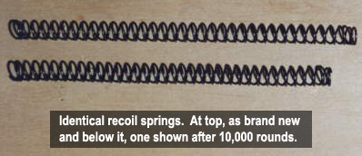
It is quite likely that the older spring, in its shortened and compressed state, may be responsible for feeding problems. In this situation, a replacement with a new factory spring is probably the best solution. Pouring out extra cash on specialty springs such as the Wolff variable-weight springs is not necessary with a .22 caliber pistol.
FINALE
Once again, complete confidence in the function performance of your pistol is essential for confidence on the firing line. I hope that this document has provided you with the knowledge to solve any problem you might have encountered, and give you that needed confidence!